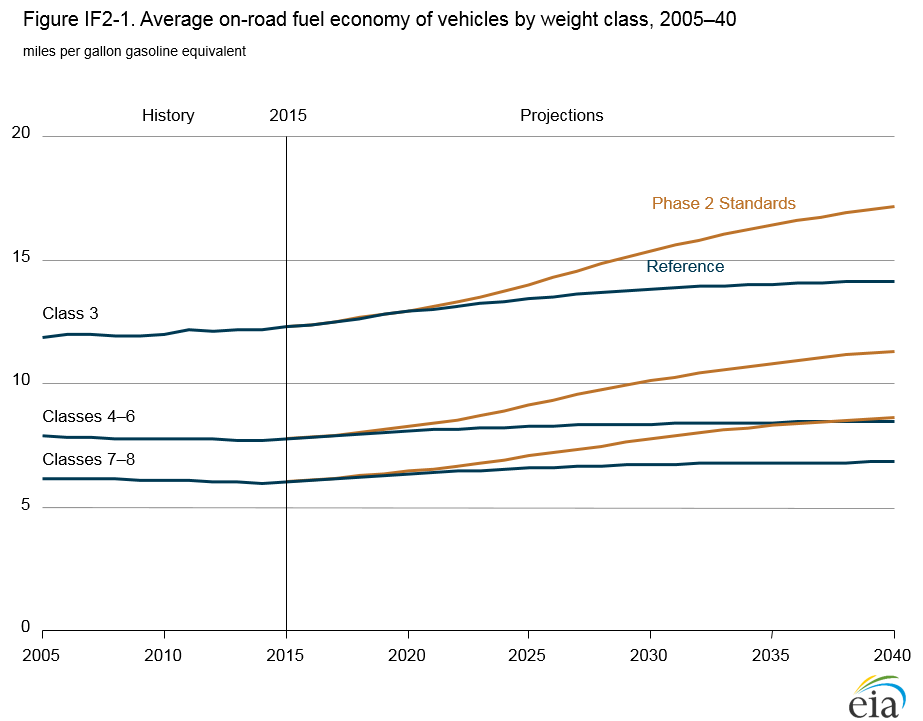
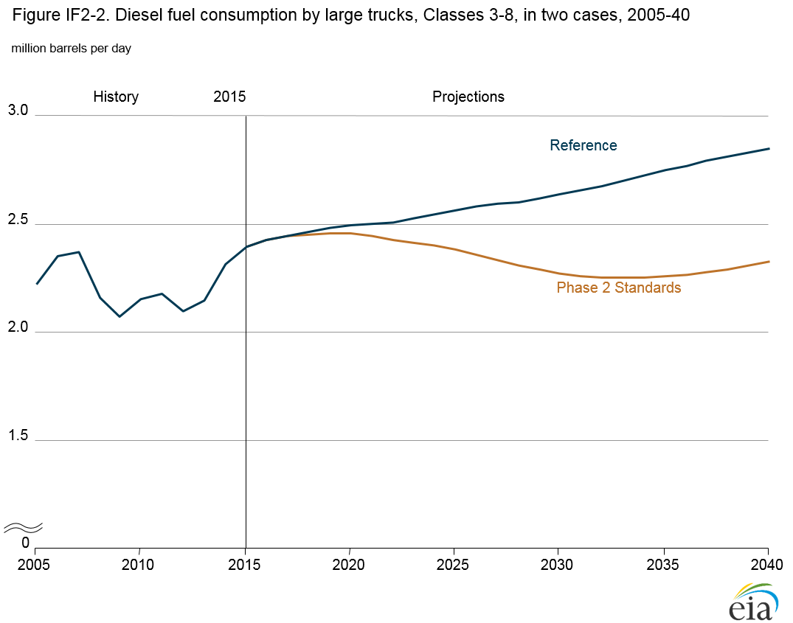
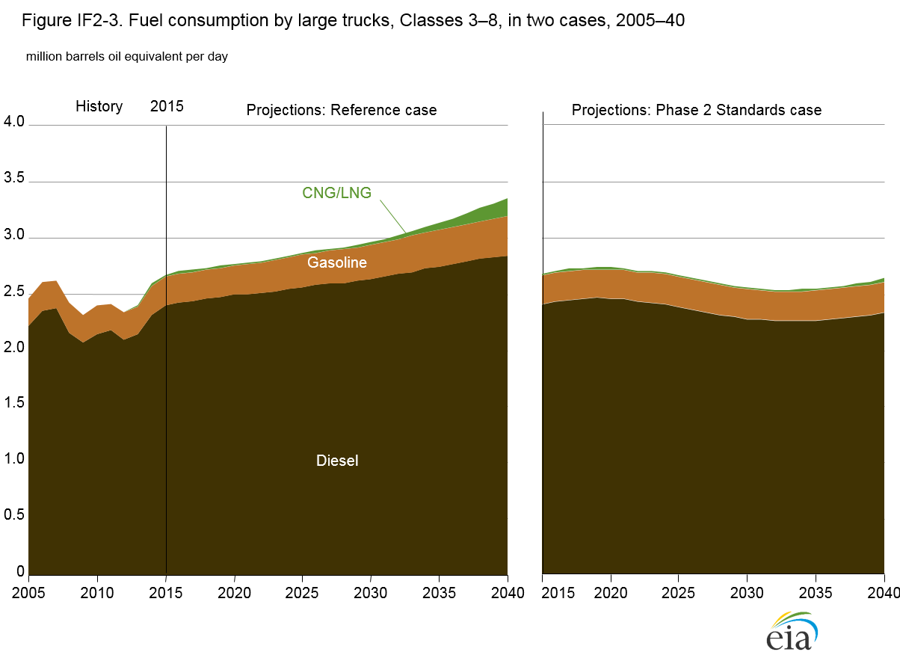
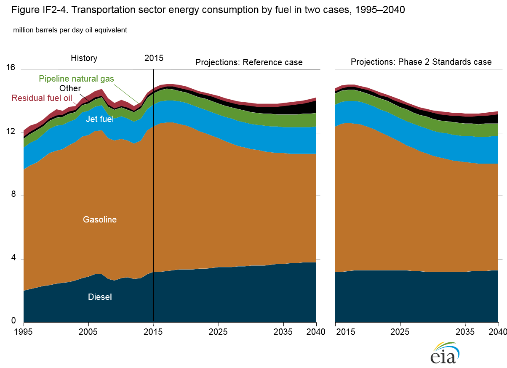
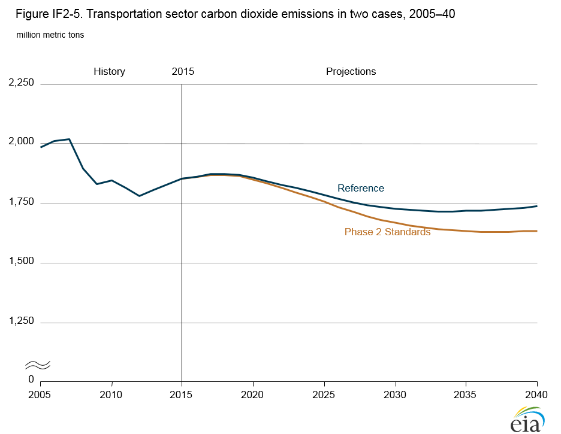

Fuel Consumption and Greenhouse Gas Emissions Phase 2 Standards for Medium- and Heavy-Duty Vehicles
Release Date: 6/22/16
The transportation sector is the second-largest consumer of energy in the United States, accounting for more than 70% of U.S. petroleum consumption and thus playing a significant role in projections of energy demand. The Annual Energy Outlook 2016 (AEO2016) Reference case reflects the effects of existing laws and regulations on the fuel consumption and greenhouse gas (GHG) emissions of medium- and heavy-duty vehicles, which in 2015 accounted for 20% of total energy consumption in the transportation sector and 60% of total delivered distillate fuel consumption.
EIA has produced a separate case—the Phase 2 Standards case—to analyze the impacts of a proposed rulemaking jointly issued by the U.S. Environmental Protection Agency (EPA) and the National Highway Traffic Safety Administration (NHTSA) in July 2015 [1] The proposed standards build on the Phase 1 GHG emissions standards for medium-duty vehicles (MDVs) and heavy-duty vehicles (HDVs) that were implemented starting in model year (MY) 2014. The proposed Phase 2 rulemaking establishes a second round of standards for GHG emissions and fuel consumption by medium- and heavy-duty trucks. The Phase 1 standards extend through MY 2018. The proposed Phase 2 standards take effect in MY 2021 (or MY 2018 for trailers) and increase in stringency through MY 2027.
In the AEO2016 Phase 2 Standards case, average fuel economy increases for all new vehicles covered by the standards. In 2040, total MDV and HDV energy consumption, which is 3.4 million barrels per day oil equivalent in the AEO2016 Reference case, is 2.6 million barrels per day oil equivalent in the Phase 2 Standards case, or 22% lower. Total MDV and HDV diesel fuel use in 2040 is 18% lower than in the Reference case. With higher on-road fuel economy of the truck stock in the Phase 2 Standards case, total delivered energy consumption in the transportation sector is 6% lower in 2040 than in the Reference case. As the average fuel economy of conventional vehicles increases in the Phase 2 Standards case, there is also less incentive to pay high capital costs for natural gas and propane vehicles despite their lower fuel costs, and there is a shift away from natural gas and propane toward conventional diesel and gasoline fuels.
The proposed Phase 2 standards address specific vehicle categories, including combination tractors, trailers, heavy-duty (HD) pickup trucks and vans, and vocational vehicles (Table IF2-1). For combination tractors, standards are proposed by cab, roof, and fuel type. In addition, for the first time, standards are proposed for heavy-haul tractors [2] and for trailers pulled by Class 7 and Class 8 tractors. The proposed standards for trailers vary in stringency, depending on the type of trailer. For HD pickups and vans, the proposed standards are categorized by diesel or gasoline engine and are set as total gallons consumed per 100 miles or as grams per mile. For heavy-duty pickups and vans, the proposed standards consider a vehicle’s work factor—the weighted average of payload and towing capacity. For vocational vehicles, the proposed standards are based on chassis type, gross vehicle weight rating (GVWR), engine type, and drive cycle.
The AEO2016 Phase 2 Standards case analyzes the estimated effects of the proposed regulations on fuel consumption and GHG emissions. The requirements for each of the vehicle categories are derived from U.S. Energy Information Administration projected sales, distributed into the size classes according to data from Polk Automotive [3] and the U.S. Census Bureau’s Vehicle Inventory and Use Survey (VIUS) [4].
| Vehicle category | Description | Truck classes covered |
|---|---|---|
| Combination tractors | Semi-trucks that typically pull trailers | Class 7 and Class 8 GVWR 26,001 pounds and above) |
| Heavy-duty pickups and vans | Pickup trucks and vans, such as 3/4-ton or 1-ton pickups for example used on construction sites or 12- to 15-person passenger vans | Class 2b and Class 3 (GVWR 8,501 to 14,000 pounds) |
| Vocational vehicles | Wide range of truck configurations, such as delivery, refuse, utility, dump, cement, school bus, ambulance, and tow trucks. For purposes of the rulemaking, vocational vehicles are defined as all heavy-duty trucks that are not combination tractors or heavy-duty pickups or vans | Class 2b through Class 8 (GVWR 8,501 pounds and above) |
Heavy-duty pickups and vans
The proposed standards for heavy-duty pickups and vans in Class 2b (GVWR between 8,501 and 10,000 pounds) and Class 3 (GVWR between 10,001 and 14,000 pounds) are phased in from MY 2021 to MY 2027. Although heavy-duty pickups and vans often use efficiency improvements similar to those for light-duty pickup trucks and vans, the standards are based on a work-based metric rather than on the footprint metric used for light-duty vehicles. The work factor incorporates towing and payload capacity as well as four-wheel drive capability in determining minimum fuel efficiency requirements.
The proposed standards include an annual 2.5%/year reduction in allowable emissions from MY 2021 to MY 2027, an approximate 16% increase from the standards set by Phase 1 for MY 2018. Standards are set individually for vehicles with spark ignition engines and vehicles with compression ignition engines, but the standards are expected to improve at the same rate. Compliance test procedures for heavy-duty pickups and vans employ the same EPA drive cycles used to determine light-duty vehicle compliance, and manufacturer compliance retains the same Phase 1 production-weighted fleet average to determine compliance.
Combination tractor cabs
The proposed Phase 2 standards continue the attribute-based classification of combination tractor cabs from Phase 1—by Classes 7 and 8, day and sleeper cabs, and roof height (low, mid, high). In addition, a specific set of vocational tractors, heavy-haul tractors, are subject to a specific standard to reflect their unique powertrains. The proposed standards would require reductions in carbon dioxide (CO2) emissions and fuel consumption of up to 24% compared to the MY 2017 baseline [5] They are based on expected technology improvements for engines, transmissions, drivelines, aerodynamics, tires, accessories, and extended idle reduction technologies. Tractors are certified with the Greenhouse Gas Emissions Model (GEM) [6].
Trailers
The contributions of trailers to fuel efficiency improvement are not regulated in Phase 1. The proposed Phase 2 standards apply to trailers pulled by Classes 7 and 8 tractors coupled to the fifth wheel. The most comprehensive requirements are applicable to traditional long-box trailers, both refrigerated and dry, which typically are pulled by high-roof cab tractors. The proposed changes center on improving aerodynamics and reducing rolling resistance. Compliance is determined with a version of GEM. The standards are less stringent for trailer categories with shorter boxes or trailers with aerodynamic limitations. Non-box trailers and non-aerodynamic box vans are required to adopt specific tire technologies to comply. In total, there are 10 separate categories:
- Long-box dry vans (longer than 50 feet)
- Long-box refrigerated vans (longer than 50 feet)
- Short-box dry vans (50 feet and shorter)
- Short-box refrigerated vans (50 feet and shorter)
- Partial-aero long-box dry vans
- Partial-aero long-box refrigerated vans
- Partial-aero short-box dry vans
- Partial-aero short-box refrigerated vans
- Non-aero box vans (all lengths of dry and refrigerated vans)
- Non-box trailers (tanker, platform, container chassis, and all other types of highway trailers that are not box trailers).
With the exception of refrigerated units, trailers typically do not directly emit GHGs. However, the proposed standards assign required levels of emissions and fuel consumption as if the trailers were pulled by a standard reference tractor [7]. The standards require reductions of 3% to 8% from MY 2021 to MY 2027 in fuel consumption and CO2 emissions, depending on the trailer type. Certain trailers are exempt, including those that operate only at low speed and those that are used for logging and mining. Trailers are also certified with GEM.
Vocational vehicles
Vocational vehicles are separated into three class groups: light heavy-duty (Classes 2b–5), medium heavy-duty (Classes 6–7), and heavy heavy-duty (Class 8). Each class group is separated by engine type (compression or spark ignition) and a duty cycle that captures expected vehicle usage and energy consumption. The three available duty cycles are urban, multi-purpose, and regional. Because power requirements for vocational vehicles vary widely, multiple baseline drivelines are available in the Phase 2 standards for calculating fuel efficiency and GHG emission improvements. Standards are set at increments starting in MY 2021, with updates in MY 2024 and MY 2027.
In comparison with MY 2017 baseline vehicles, the proposed standards require a 16% reduction in CO2 emissions and fuel consumption for all vehicles across all weight classes powered by compression ignition (primarily diesel) engines. Vocational vehicles powered by spark ignition engines are subject to emission and fuel-use reductions by MY 2027 of 12% for light heavy-duty, 13% for medium heavy-duty, and 12% for heavy heavy-duty. Like combination tractors and trailers, vocational vehicles are certified with GEM.
Certification for combination tractors, trailers, and vocational vehicles
As in Phase 1, compliance for tractors and vocational vehicles is certified in Phase 2 using an updated version of GEM that incorporates some fixed input values, such as payload and trailer weights, to determine fuel efficiency performance by drive cycle. Compliance can be achieved through adoption of various technology combinations. Improving on Phase 1, the Phase 2 GEM incorporates several changes to more accurately reflect the effects of technology adoption on fuel efficiency performance. These changes include road grade, an additional averaged aerodynamic drag coefficient, and improved simulation of engines and transmissions. Ultimately, the changes mean that a vehicle evaluated with the Phase 2 GEM would have higher CO2 emissions and fuel consumption than if evaluated with the Phase 1 GEM. Consequently, results from the two standards are not directly comparable. Trailers are modeled in GEM with attribute inputs for aerodynamics, tires, weight characteristics, and performance.
Results
The Phase 2 Standards case estimates fuel efficiency improvement and fuel consumption based on the proposed requirements for combination tractors, HD pickups and vans, and vocational vehicles. Trailer stocks are not explicitly modeled, because there are limited data on trailer inventories and usage; however, efficiency improvements as a result of the adoption of limited trailer improvements are included in the model. Between MY 2017 and MY 2027, the Phase 2 Standards case indicates that the proposed standards lead to the adoption of technologies to improve fuel economy that otherwise would not have been purchased. Although the standards do not start until MY 2021, manufacturers are expected to begin adoption beforehand to ensure initial compliance by MY 2021. Fuel economy and energy usage reports combine vocational and nonvocational vehicles for Classes 3, 4–6, and 7–8.
New vehicle average fuel economy increases for all size classes in the Phase 2 Standards case. From 2017 to 2027, new vehicle average fuel economy (combined Classes 3–8) rises by 28% in the Phase 2 Standards case compared to the Reference case. After 2027 the standards are held constant, but technology adoption continues as new technologies become available. In 2040, new vehicle fuel efficiency averages 10.6 miles per gallon gasoline equivalent in the Phase 2 Standards case, representing a 33% improvement compared to the Reference case. The improvements represent overcompliance as the model continues to adopt cost-effective technologies beyond 2027.
The increase in fuel economy of the entire vehicle stock is lagged, reflecting slow turnover in the stock of Classes 2b–8 trucks, which have a median lifetime of 12 years [8]. As new medium- and heavy-duty trucks are added to the total stock, and older trucks with lower fuel economy are removed from service, the average on-road fuel economy for the total stock of heavy-duty trucks increases in the Phase 2 Standards case (Figure IF2-1).

figure data
In comparison with the AEO2016 Reference case, differences in total vehicle sales and stocks are negligible in the Phase 2 Standards case. Between 2017 and 2040, new MDV and HDV sales per year are equal to about 5% of the total truck stock, ranging from about 660,000 to 790,000 new MDV and HDV sales per year out of a total stock that grows from 11.7 million in 2017 to 17.2 million in 2040. However, there is a shift away from natural gas and propane toward conventional diesel and gasoline in the Phase 2 Standards case. As the average fuel economy of conventional vehicles increases, there is less incentive to pay high capital costs for natural gas and propane vehicles, despite their lower fuel costs.
The most significant effect of Phase 2 is a reduction of diesel consumption—the most commonly used fuel—in medium- and heavy-duty vehicles. In the Reference case, MDV and HDV diesel consumption increases steadily through 2040, as industrial output grows (Figure IF2-2). In the Phase 2 Standards case, diesel consumption decreases from 2015 to 2033 as gains in fuel economy more than offset growth in transport requirements. After 2033, diesel consumption increases slowly without continued enhancement of the standard, but in 2040 it still is 18% lower in the Phase 2 Standards case than in the Reference case. Cumulative MDV and HDV consumption of diesel fuel from 2021 to 2040 in the Phase 2 Standards case is 2.5 billion barrels lower than in the Reference case.

figure data
The reduction in diesel consumption in the Phase 2 Standards case has significant implications for the mix, as well as the amount, of petroleum products consumed in the United States. Implications for refiners would depend on the extent to which similar standards were adopted in other countries with significant trucking activity, because diesel and other petroleum products are widely traded in global markets.
Consumption of other fuels by MDVs and HDVs—including gasoline, propane, liquefied natural gas (LNG), and compressed natural gas (CNG)—is lower in the Phase 2 Standards case than in the Reference case (Figure IF2-3). In the Phase 2 Standards case, diesel fuel consumption accounts for 90% of all fuel consumption by MDVs and HDVs in 2040, with the remainder consisting primarily of gasoline and a small amount of natural gas. The higher diesel share in the Phase 2 Standards case reflects a shift away from alternative fuels as improved fuel economy reduces the incentive to pay high capital costs for natural gas and propane vehicles despite their lower fuel costs.

figure data
In the Phase 2 Standards case, higher on-road fuel economy of the truck stock reduces total delivered energy consumption in the transportation sector. From 2021 to 2040, cumulative delivered energy consumption in the transportation sector is 3% lower in the Phase 2 Standards case than in the Reference case, and total transportation sector energy consumption in 2040 is about 750,000 barrels per day oil equivalent (22%) lower than in the Reference case (Figure IF2-4). Cumulative CO2 emissions from 2021 to 2040 in the transportation sector are 1,200 million metric tons (3%) lower in the Phase 2 Standards case than in the AEO2016 Reference case. In 2040, total transportation sector CO2 emissions are 6% lower in the Phase 2 Standards case than in the AEO2016 Reference case (Figure IF2-5).

figure data

figure data
Regulatory and data issues
- Although Class 2b pickup trucks and vans are included in the Phase 2 Standards case, their fuel economy and consumption are not reported individually. However, the effects of Class 2b are included in total transportation fuel consumption and emissions data.
- The Phase 2 Standards case approximates the proposed rulemaking by disaggregating Class 7 and Class 8 tractor vehicle body types (based on data from the VIUS survey [9], which has not been updated since 2002). As a result, there may be significant differences between the tractor market today and more than a decade ago. Further, there are data uncertainties associated with vehicle usage reported in the VIUS survey. Nevertheless, the data were used because VIUS is the only source of information on tractor type.
- Trailers were not explicitly modeled in this study, because there are limited data on trailer inventories and usage. There are more registered trailers than tractors, and an understanding of usage logistics is critical to evaluating the adoption and overall results of improving trailer technology.
- Despite improvements since the start of Phase 1, there are still limits on data about the technologies used to meet the Phase 1 compliance standards. Consequently, it is difficult to estimate the energy outcomes that could be expected as medium- and heavy-duty trucks begin to comply with the new Phase 2 standards. Without better data, it is difficult to analyze the composition of the truck market at the level of diversity included in the proposed standards, or the efficiency and fuel economy metrics associated with each classification in the standards.
- A critical issue is the limited availability of information that would provide a baseline from which to measure improvement. The lack of baseline data is a result of the previously discussed data limitations, as well as operational changes in Phase 2 compared with Phase 1. Although many improvements have been made in GEM, the changes evaluation methods for the different technology categories make it difficult to map Phase 1 compliance to Phase 2. The baseline for Phase 2 (MY 2017) assumes compliance with Phase 1 at that time, and it is evaluated differently. As a result, it is not known whether Phase 1 compliant vehicles in MY 2017 accurately represent the proposed Phase 2 baseline.
- Continuing issues from Phase 1 include how compliance will be measured and how well compliance testing procedures will replicate the average real-world performance of combination tractors, heavy-duty pickups and vans, vocational vehicles, and trailers. Phase 2 has three vocational drive cycles that can be used for compliance (urban, multi-purpose, and regional). Only the multi-purpose cycle is used in the AEO2016 Phase 2 Standards case. GEM has many new categories and improvements compared with Phase 1, but many of the categories are simplified to Yes or No responses, rather than to custom inputs. Some inputs, including payload and trailer weights, are fixed.
- Compliance for heavy-duty pickups and vans will be determined by a vehicle test procedure similar to that used in the national program for light-duty vehicles, including the highway fuel economy test and the federal test procedure for city driving, weighted 45% and 55%, respectively. Heavy-duty pickups and vans are assumed to be loaded to one-half of their payload capacity.
Endnotes
- U.S. Environmental Protection Agency and National Highway Traffic Safety Administration, "Greenhouse Gas Emissions and Fuel Efficiency Standards for Medium- and Heavy-Duty Engines and Vehicles – Phase 2" (Washington, DC: June 19, 2015), http://www.nhtsa.gov/fuel-economy.
- Heavy-haul tractors have a gross combined weight rating of more than 120,000 pounds.
- IHS-Polk Automotive, unpublished data (Southfield, MI: 2014).
- Microdata available online at U.S. Department of Commerce, U.S. Census Bureau, "2002 Vehicle Inventory and Use Survey," https://www.census.gov/svsd/www/vius/2002.html.
- U.S. Environmental Protection Agency and National Highway Traffic Safety Administration, "Greenhouse Gas Emissions and Fuel Efficiency Standards for Medium- and Heavy-Duty Engines and Vehicles – Phase 2" (Washington, DC: June 19, 2015), http://www.nhtsa.gov/fuel-economy.
- The GEM model is a MATLAB/Simulink based model with a spreadsheet interface that determines compliance based on set factors and user inputs (such as vehicle class, engine data, transmission type, aerodynamics, technology adoption, etc.) with variations for the different vehicle types. U.S. Environmental Protection Agency, "Greenhouse Gas Emissions Model (GEM) for Medium- and Heavy-Duty Vehicle Compliance," https://www3.epa.gov/otaq/climate/gem.htm.
- U.S. Environmental Protection Agency and National Highway Traffic Safety Administration, "Greenhouse Gas Emissions and Fuel Efficiency Standards for Medium- and Heavy-Duty Engines and Vehicles – Phase 2" (Washington, DC: June 19, 2015), http://www.nhtsa.gov/fuel-economy.
- IHS-Polk Automotive, unpublished data (Southfield, MI: 2014).
- Microdata available online at U.S. Department of Commerce, Bureau of the Census, "2002 Vehicle Inventory and Use Survey," https://www.census.gov/svsd/www/vius/2002.html.